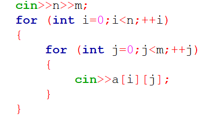
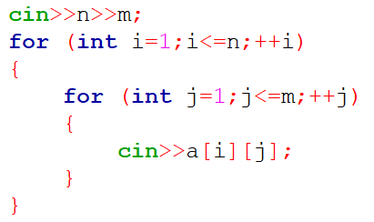
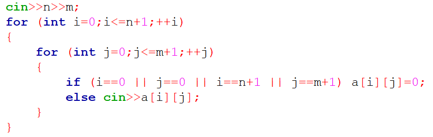
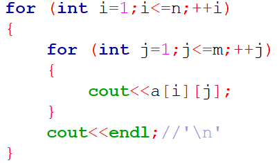

De regulă, elementele matricei se dau în ordine: de sus în jos și de la stânga la dreapta. Citirea presupune nu doar citirea elementelor matricei, dar și citirea dimensiunilor n și m. Prima citire va fi cu indexarea elementelor de la 0:
Cea de-a doua citire va fi cu indexarea elementelor de la 1:
Totodată, în unele probleme poate fi nevoie să aflăm vecinii unui element. În acest caz, pentru cazurile în care acest element se află prima linie sau prima coloană ori pe prima linie sau ultima coloană există o citire specială, numită citire cu bordură, ce se realizează astfel:
Aceasta se face în mod similar cu citirea, însă pentru a obţine aspectul matematic al matricilor, se va afişa fiecare linie pe câte un rând astfel:
La fel ca în cazul tablourilor unidimensionale, și tablourile bidimensionale au două categorii de dimensiuni: